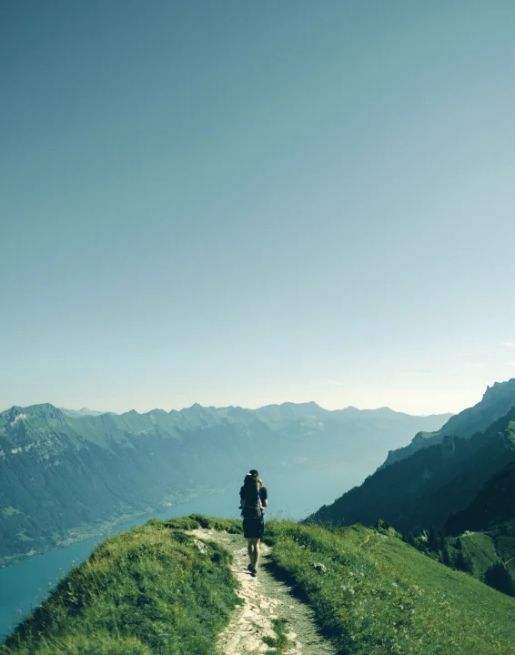
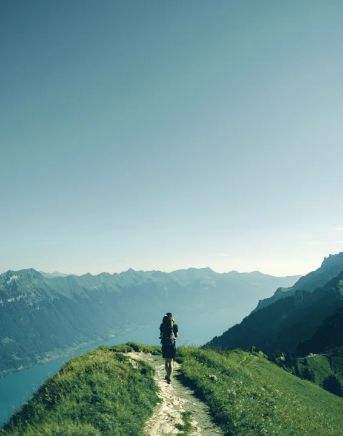
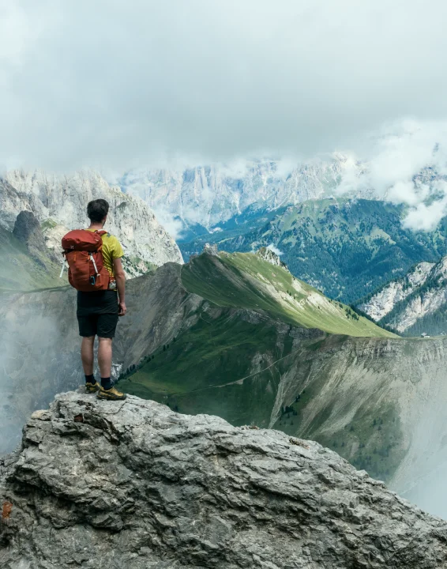
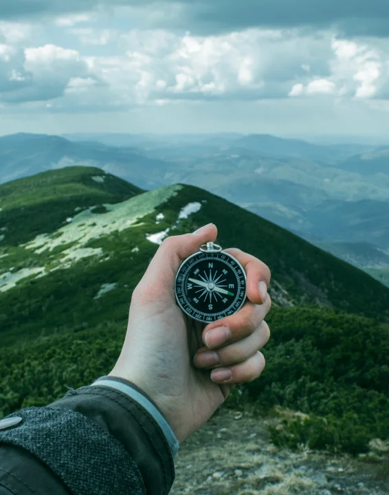

01
GET STARTED
What level of hiker are you ?
Determining what level of hiker you are can be an important tool
when planning future hikes. This hiking level guide will help you
plan hikes according to different hike ratings set by various
websites like All Trails and Modern Hiker. What type of hiker are
you – novice, moderate, advanced moderate, expert, or expert
backpacker?
read more
 

02
HIKING ESSENTIALS
Picking the right Hiking Gear!
The nice thing about beginning hiking is that you don’t really need
any special gear, you can probably get away with things you already
have. Let’s start with clothing. A typical mistake hiking beginners
make is wearing jeans and regular clothes, which will get heavy and
chafe wif they get sweaty or wet.
read more

03
WHERE YOU GO IS THE KEY
Understand Your Map & Timing
To start, print out the hiking guide and map. If it’s raining, throw
them in a Zip-Lock bag. Read over the guide, study the map, and have
a good idea of what to expect. I like to know what my next landmark
is as I hike. For example, I’ll read the guide and know that say, in
a mile, I make a right turn at the junction..
read more
